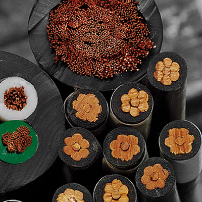
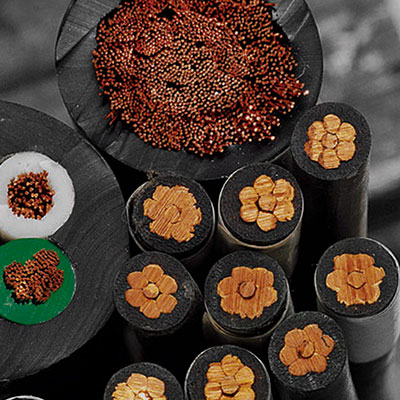

3/7
Cliente
> Aselcorp Sucursal Colombia
Rol
- Diseño gráfico
- Branding
- Diseño Web
Fecha
- Ago. 2015
Descripción
- Trabajé para una
empresa cuya finalidad
era expandir su
alcance en otros
países latinos, en éste
caso Colombia por lo
que se planteó todo el diseño
de marca para la misma.
Conocer la empresa
Aselcorp es una empresa de venta y distrubución de suministros eléctricos tales como cable (principalmente) y accesorios, altamente utilizados en construcción y otros escenarios. Tiene sus operaciones localizadas en Venezuela y Panamá, para ahora alcanzar el mercado Colombiano.
La cara de la empresa
Cuando hablamos de 'branding' o creación de marca, no se habla de simplemete crear un logo, que diga el nombre de la empresa, por el contrario, se trata de un delicado proceso de lograr transmitir la escencia de la empresa, su naturaleza, lo que hacen, su identidad, es crear una imagen con la que los empleados se sientan identificados, es darle una cara a la empresa.
01
Logo
A razón de que la palabra 'logo' sea más ampliamente utilizada, voy a seguir utilizando éste término de forma general para describir el producto final de un proceso de diseño.
Para comenzar las iteraciones de lo que sería el logo, había ciertos conceptos en los que podia basarme para empezar a darle una intención a lo que eventualmente iba a realizar, conceptos tales como: Dinamismo, Ambición, sofisticación, Cable de cobre.
El proceso de diseño comenzó con el logo. Empecé buscando inspiración e influencia en cosas que estuvieran relacionadas con la compañía.
Así fue como di con ciertas imágenes que podía usar como referentes de inspiración para de ahí abstraer lo que quería lograr del logo de la empresa.
Imágenes que inspiraron el logo
 

Aproximaciones al logo
Logo Final
Luego de varias iteraciones, éste es el resultado final, un logo que asciende, que crece dinámico, simple y con similitud al producto que define la operación de la empresa, que se sostiene a sí mismo y que logra ser fácilmente identificable.
Variables del Logo
Adaptable
02
Identidad
Aquí es donde se le da el carácter a la marca, a la imagen que se ha creado, donde se establecen parámetros para que así mismo se respete y haya homogeneidad en cada una de las aplicaciones que tenga el logo ya creado. Que los colores sean respetados y así mismo las dimensiones, ese respeto por la imagen de la marca transmite la idea de unidad.

03
Piezas
Las piezas son todos los documentos que una empresa debe mover y que así mismo deben ser una extensión de la imagen de la empresa.
La complejidad de este proyecto va más allá del mero diseño de la imagen corporativa, al ser un proyecto de indentidad era necesario diseñar todo aquello que la empresa pueda necesitar. Esto también requirió hacer el diseño de una página web, cabe anotar que fue únicamente el diseño y no el desarrollo.
04
Muckups
Los mockups sirven para mostrar el producto final, los posibles usos y cómo la identidad empieza a reflejar a la empresa con aplicaciones muy realistas.
El Resultado
Éste fue un proyecto completo, donde trabajé de forma conjunta con funcionarios de la empresa para asegurarme que la imagen fuera algo que representara tanto a la empresea como a empleados; trabajé en transmitir los conceptos que la empresa quería comunicar.
El resultado es una nueva identidad de marca para apoyar su nombre y la dirección de la compañía. Al final, creo que este proyecto alcanzó un buen balance entre versatilidad y carácter. No sólo en el sentido del producto visual de la marca, sino también en la dirección en la que se lanza la marca. Establecimos herramientas gráficas para construir una empresa que está centrada en su producto, sus clientes y que es fiel a su esencia.